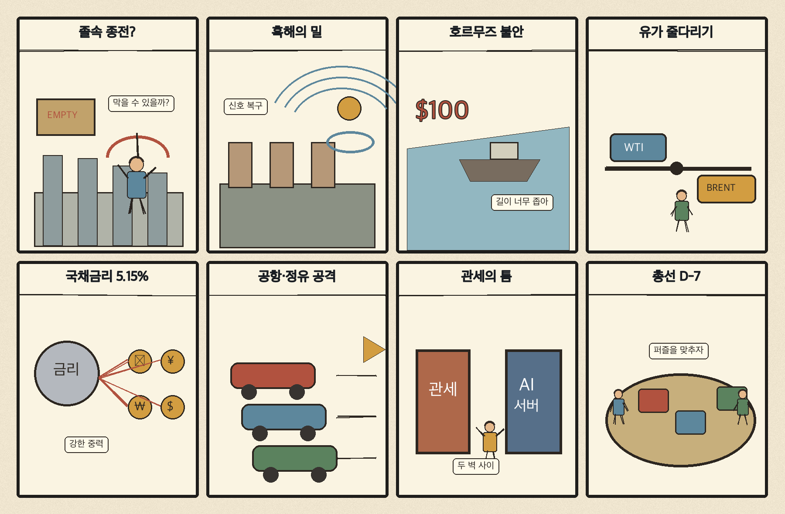
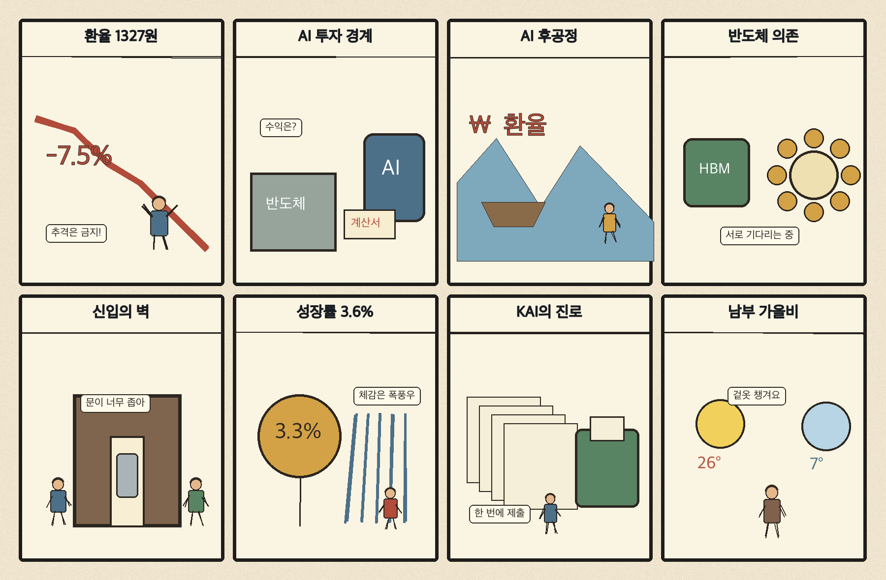

01
액센츄어 · 228.48→236.93달러 · +3.70%
내용요약 시가 대비 +3.70%로 조사 종목 중 상승 폭이 컸습니다. 기술 서비스주로 자금이 유입된 흐름입니다.
예상여파 국내 인공지능 소프트웨어·서비스주에도 심리상 우호적일 수 있으나 실적과 수주가 확인된 종목 중심으로 봐야 합니다.
MORNING_BRIEFING_20261020
작성 시각: 2026-10-20 06:34 KST · 직전 미국 정규장과 2026-10-20 KST 당일 공개 기사 기준
직전 미국 정규장인 10월 19일 뉴욕증시는 다우 -0.07%, S&P 500 +0.41%, 나스닥 +1.11%로 혼조 상승했습니다. 반도체·기술주 저가매수가 나스닥을 끌어올렸지만 조사 대상 반도체 종목 다수는 시가 대비 약세여서 업종 전체 회복보다 선택적 반등에 가깝습니다. 한국 증시는 전일 급반등 뒤 환율 하락과 미국 기술주 반등을 받되, 시초가 추격보다 외국인 수급과 후공정·대형 반도체의 상대강도를 확인해야 합니다.
| 지수 | 종가 | 등락률 | 한국 증시 시사점 |
|---|---|---|---|
| 다우존스 | 51,966.03 | -0.07% | 대형주보다 기술주 중심의 제한적 위험선호 |
| S&P 500 | 7,690.73 | +0.41% | 대형주보다 기술주 중심의 제한적 위험선호 |
| 나스닥 종합 | 26,430.89 | +1.11% | 반도체 저가매수 심리에는 우호적이나 종목별 차별화 예상 |
반도체 저가매수로 반등했지만 종목별 온도차는 컸습니다.
전일 5,768.01로 이틀째 반등했으며 시가 대비 상승 폭은 5.09%였습니다.
25개월 최저 구간의 환율이 수출·수입 업종을 다르게 흔듭니다.
생산계획 연계와 실제 가동률이 테마보다 중요한 확인 지표입니다.
10월 19일 보고서는 미국 기술주 급락의 국내 반영 폭과 수급·컨센서스·유사 조건 표본을 함께 검증하지 못해 공식 추천을 내지 않았습니다. 게시 당시 판단을 유지하며 사후 종목을 추가하지 않습니다.
| 시장 | 종가 | 등락률 | 기준 |
|---|---|---|---|
| KOSPI | 5,768.01 | +1.76% | 10월 19일 · 시가 대비 +5.09% |
| KOSDAQ | 808.89 | +1.78% | 10월 19일 · 시가 대비 +4.63% |
| 다우존스 | 51,966.03 | -0.07% | 미국 10월 19일 정규장 |
| S&P 500 | 7,690.73 | +0.41% | 미국 10월 19일 정규장 |
| 나스닥 종합 | 26,430.89 | +1.11% | 미국 10월 19일 정규장 |
팔란티어는 시가 대비 +3.82%로 조사 종목 중 상승 폭이 컸습니다.
아마존 +2.78%, 액센츄어 +3.70%로 기술·서비스가 상대 강세였습니다.
어플라이드머티리얼즈 -2.93%, ASML -1.82%로 장비주는 약했습니다.
코인베이스 -4.06%, JP모건 -1.68%로 위험자산 내부 차별화가 컸습니다.
내용요약 시가 대비 +3.70%로 조사 종목 중 상승 폭이 컸습니다. 기술 서비스주로 자금이 유입된 흐름입니다.
예상여파 국내 인공지능 소프트웨어·서비스주에도 심리상 우호적일 수 있으나 실적과 수주가 확인된 종목 중심으로 봐야 합니다.
내용요약 시가 대비 +3.82%로 반등했습니다. 직전 급락 뒤 고변동 인공지능 소프트웨어에 저가매수가 들어왔습니다.
예상여파 국내 인공지능 테마의 단기 심리를 높일 수 있지만 급락 뒤 반등이라는 점에서 추격 위험이 큽니다.
내용요약 시가 대비 -4.06%로 조사 종목 중 낙폭이 가장 컸습니다.
예상여파 암호화폐 가격 회복과 거래소 주가가 엇갈려 위험선호가 전면적으로 복원된 것은 아니라는 신호입니다.
내용요약 시가 대비 -2.93%로 반도체 장비주는 나스닥 반등과 달리 약세였습니다.
예상여파 국내 장비주도 지수 반등만 보고 추격하기보다 고객 투자계획과 실제 수주를 확인해야 합니다.
내용요약 시가 대비 +2.96%로 대형 성장주 반등에 합류했습니다.
예상여파 국내 이차전지 심리에 단기 우호적일 수 있으나 업황과 원재료 가격을 별도로 점검해야 합니다.
직전 거래일 KOSPI는 +1.76%, KOSDAQ은 +1.78% 올랐고 시가 대비 상승 폭은 각각 5.09%, 4.64%였습니다. 미국 나스닥 +1.11%와 원화 강세는 성장주 심리에 우호적이지만, 미국 반도체 장비주는 약세여서 업종 전체의 무차별 상승을 전제하기 어렵습니다. 전일 급반등 뒤 시초가를 추격하지 말고 외국인 현·선물 수급, 환율 1320원대 유지 여부와 후공정주의 실제 거래대금을 확인합니다.
오늘은 추천 없음 — 현금 관망
전일 국내 지수가 시가 대비 5% 안팎 급반등한 뒤라 과열·갭 위험이 있고, 장전 시점에 전일까지의 외국인·기관 수급과 컨센서스 변화, 30건 이상 유사 조건 표본을 함께 확보해 종합점수 75점·상승확률 60%·예상 손익비 1.5를 모두 검증한 종목이 없습니다.
관심 연결종목 인공지능 후공정·전력 인프라·원화강세 수혜 업종은 뉴스 연결 관찰 대상일 뿐 매수 추천이 아닙니다. 장중 수급과 실제 공시를 확인하기 전 추격매수를 금지합니다.
나스닥 반등이 국내 대형주와 후공정주에 얼마나 이어지는지 봅니다.
원화 강세 지속 여부와 수출주·외국인 수급의 반응을 확인합니다.
유가·물가 우려로 오른 10년물 금리가 성장주 반등을 제약하는지 봅니다.
21일까지 이어지는 비와 이후 기온 하락에 대비합니다.
핵심 요약: 인공지능 투자심리는 펀드 환매와 기업공개 전략 수정으로 흔들렸지만, 후공정·소형모듈원전·로봇처럼 실제 생산과 전력을 잇는 투자는 계속되고 있습니다. 오늘은 모델 기대보다 현금흐름, 고객 인증과 가동률을 중심으로 옥석을 가릴 때입니다.
내용요약 인공지능 관련 펀드 자금과 기업공개 전략이 바뀔 만큼 투자심리가 위축됐다는 당일 분석입니다.
예상여파 기술의 장기 성장성과 단기 자금조달 여건을 분리해 보고, 매출보다 차입과 현금흐름에 민감한 기업을 선별해야 합니다.
내용요약 데이터센터 투자 부담과 수익화 논쟁 속에서 빅테크 실적이 인공지능 인프라 방향을 가를 분수령이라는 보도입니다.
예상여파 클라우드 주문과 설비투자 지침이 반도체·서버·전력 공급망의 단기 기대치를 다시 정할 수 있습니다.
내용요약 국내 후공정 기업들이 단순 납품을 넘어 고객 생산계획과 연결되는 인공지능 반도체 협업을 확대한다는 보도입니다.
예상여파 실제 고객 인증과 가동률 상승이 확인되면 패키징·테스트 기업의 수주 가시성이 높아질 수 있습니다.
내용요약 아마존이 석탄발전소 부지의 소형모듈원전 12기, 960메가와트 개발비를 지원한다는 보도입니다.
예상여파 인공지능 데이터센터 전력 확보 경쟁이 원전·송전망·장기 전력계약 투자로 확장되는 흐름을 보여줍니다.
내용요약 손정의 회장이 인공지능 위험을 인공지능과 로봇으로 해결한다는 관점에서 로봇 기업 30곳에 투자했다는 보도입니다.
예상여파 소프트웨어 모델 경쟁이 제조·물류·서비스 현장의 피지컬 인공지능으로 옮겨가며 센서와 제어 생태계가 커질 수 있습니다.
핵심 요약: 우크라이나 종전 압박과 흑해 곡물 차질, 후티의 석유시설 공격이 외교·식량·에너지 시장을 동시에 흔들고 있습니다. 유럽의 알루미늄 관세 격차와 이스라엘 총선도 공급망과 중동 위험을 바꿀 변수입니다.
내용요약 미국 중간선거를 앞두고 트럼프 대통령이 러시아·우크라이나 종전을 서두르고 푸틴 대통령은 유럽을 뺀 담판을 제안했다는 보도입니다.
예상여파 휴전 속도보다 영토·안보보장과 유럽 참여 방식이 불명확하면 외교 마찰과 시장 변동성이 이어질 수 있습니다.
내용요약 러시아와 우크라이나의 공습 격화로 흑해 수출 차질 우려가 커지며 국제 밀 가격이 반등했다는 보도입니다.
예상여파 곡물 운송이 막히면 식품 원가와 취약국 물가 부담이 다시 오를 수 있습니다.
내용요약 러시아 제재 완화 기대와 후티의 석유시설 공격 소식이 엇갈리며 국제유가가 혼조를 보였다는 보도입니다.
예상여파 공급 기대와 중동 위험이 맞서는 국면이라 항공·화학·운송 업종의 원가 가시성이 낮습니다.
내용요약 미국과 유럽의 관세 격차 때문에 유럽이 전략적 알루미늄 산업을 잃을 수 있다는 업계 경고입니다.
예상여파 금속 공급망의 지역 재편은 자동차·방산·건설 원가와 유럽 산업정책 강화로 이어질 수 있습니다.
내용요약 이스라엘 총선을 일주일 앞두고 선거 결과가 가자전쟁과 중동 외교의 향방을 좌우할 수 있다는 보도입니다.
예상여파 정권 구성과 전쟁정책 변화에 따라 휴전 협상, 해상운송과 에너지 위험 프리미엄이 달라질 수 있습니다.

핵심 요약: 원·달러 환율은 25개월 최저권으로 내려왔고 인공지능 후공정 협업과 반도체 수출이 성장 기대를 높였습니다. 반면 청년의 첫 일자리 진입 장벽과 반도체 의존 위험, 남부 가을비는 체감경제와 일상의 부담을 보여줍니다.
내용요약 원·달러 환율이 장중 1327.6원까지 내려가 25개월 만의 최저를 기록했다는 보도입니다.
예상여파 수입물가 부담에는 긍정적이지만 수출기업의 원화 환산 실적과 외국인 수급에는 업종별로 다른 영향을 줄 수 있습니다.
내용요약 하나마이크론·ISC·한미반도체가 고객 생산계획과 연계한 인공지능 후공정 대응을 강화한다는 보도입니다.
예상여파 패키징·테스트 기대는 커지지만 실제 수주와 가동률을 확인하지 않은 테마 추격은 경계해야 합니다.
내용요약 대학 진학 뒤에도 경력을 요구받는 청년 고용 구조 때문에 한국의 취업률이 경제협력개발기구 평균의 절반 수준이라는 보도입니다.
예상여파 첫 일자리 진입 지연은 소비·주거·출산 계획까지 늦출 수 있어 직무경험과 채용 연결 정책이 중요합니다.
내용요약 정부가 반도체 수출 호조를 근거로 올해 성장률 전망을 3.6%까지 높였다는 당일 보도입니다.
예상여파 수출 개선이 내수·고용으로 확산되는지와 반도체 가격 조정 위험을 함께 점검해야 체감 회복을 판단할 수 있습니다.
내용요약 남부지방에는 21일까지 최대 60밀리미터 비가 이어지고 전국 낮 기온도 22도 안팎에 머문다는 예보입니다.
예상여파 출근길 미끄럼과 시설물 피해에 대비하고 비가 그친 뒤 기온 하락에 맞춰 건강관리가 필요합니다.
